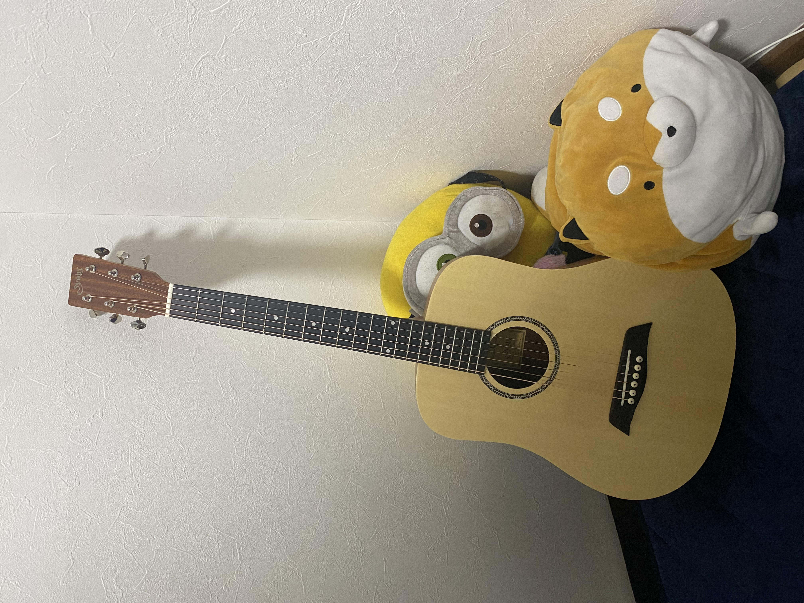

名前:Man Xuan Dat
生年月日:1999年7月21日
出身:ベトナム

| 西暦 | 月 | 学歴･職歴 |
|---|---|---|
| 学歴 | ||
| 2014 | 9 | HIEP HOA S0 3 高等学校 入学 |
| 2017 | 7 | HIEP HOA SO 3 高等学校 卒業 |
| 来日 | ||
| 2017 | 10 | 早稲田言語学院横浜校 入学 |
| 2019 | 3 | 早稲田言語学院横浜校 卒業 |
| 2019 | 4 | 岩谷学園テクノビジネス横浜保育専門学校 日本語研究科 入学 |
| 2020 | 3 | 岩谷学園テクノビジネス横浜保育専門学校 日本語研究科 卒業 |
| 2020 | 4 | 学校法人情報文化学園アーツカレッジヨコハマ 国際情報ビジネス学科 入学 |
| 2022 | 3 | 学校法人情報文化学園アーツカレッジヨコハマ 国際情報ビジネス学科 卒業見込み |
| 職歴 | ||
| 2018 | 9 | スシロー 新横浜店 アルバイト開始 (キッチン、ホール) |
日本語力

タイピング力

長所
私の得意分野はスポーツです。サッカーが好きです。なぜかというとサッカーはチームワークが必要です。だからこそそれぞれの人の得手不得手を理解し、 その人の立場に立って考えたり戦略を立てたりするのが得意です。それ上体がより活発になり、考え方や視野も広がっていきます。 会社でもチーム全体の仕事のことを考えて働ける人物として貢献したいと思っています。
得意科目
アルバイトで働く仲間から「優しいですね」とよく言われています。「どうしてですか」と聞くと「自分が忙しのに他の人も手伝ってあげたり、 仕事がやり方をわからない人に教えてあげたりするから」という答えでした。自分ではよくわかりませんが、少し考えてみると他の人の立場に立って考えたり、 行動していることに気が付きました。職場でお客様のことを一番に考えて行動することが大事だと思います。このポイントは私の長所だと思います。
趣味
-サッカーをすることと
-ギターを弾くことと
-写真を撮ること
後輩達に役立つものを作りました。ここにクリック
By: Man Xuan Dat
Gmail: manxuandat217@gmail.com